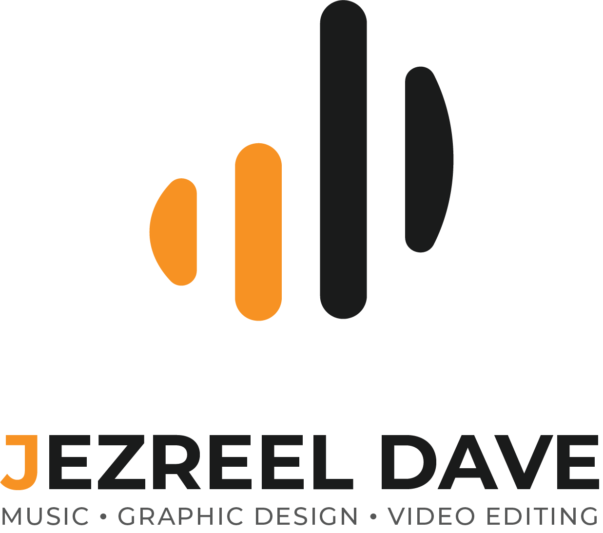
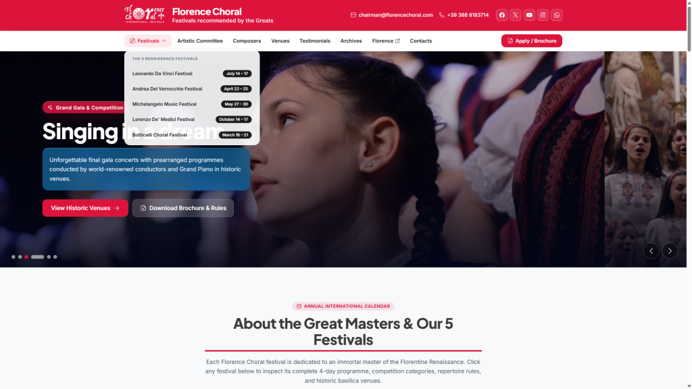
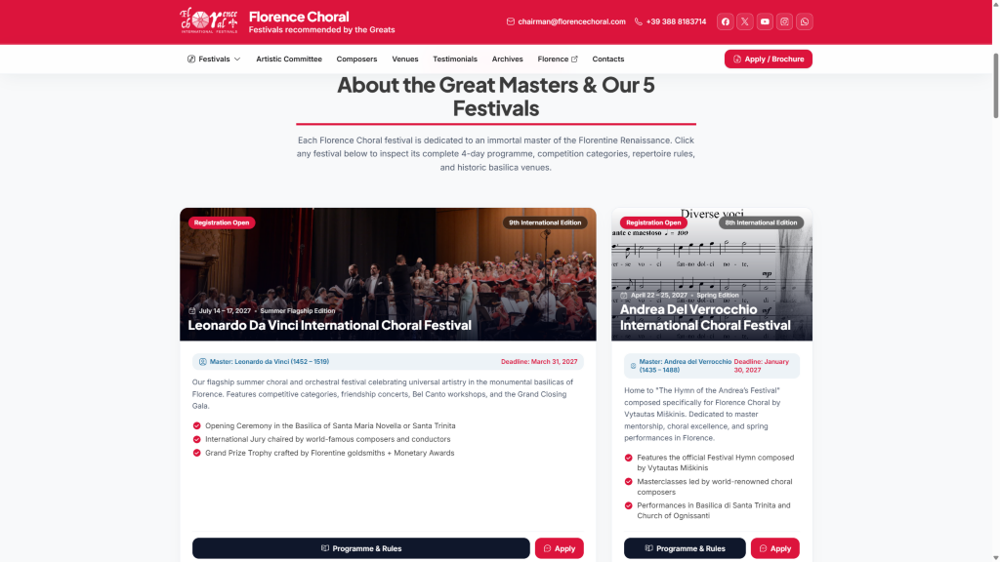
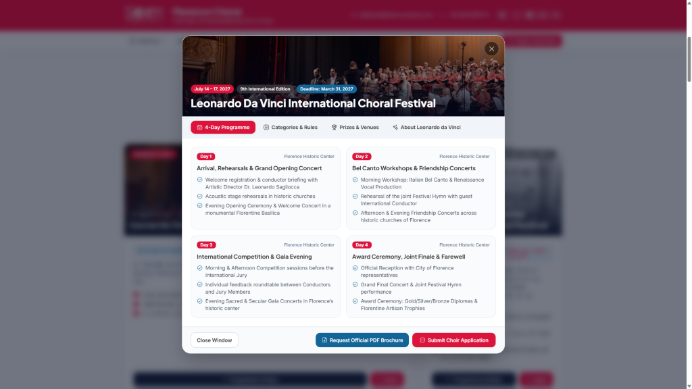
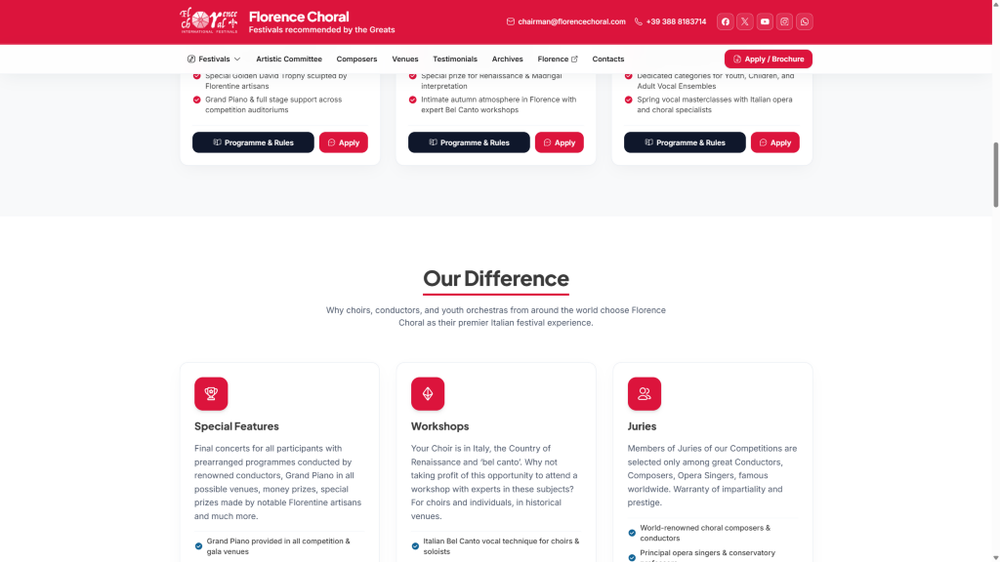
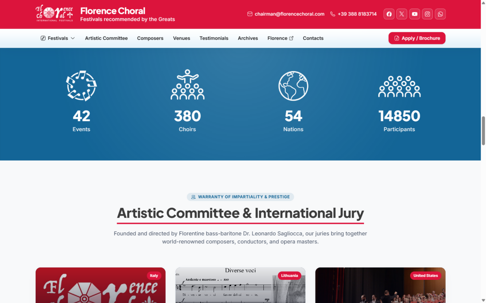
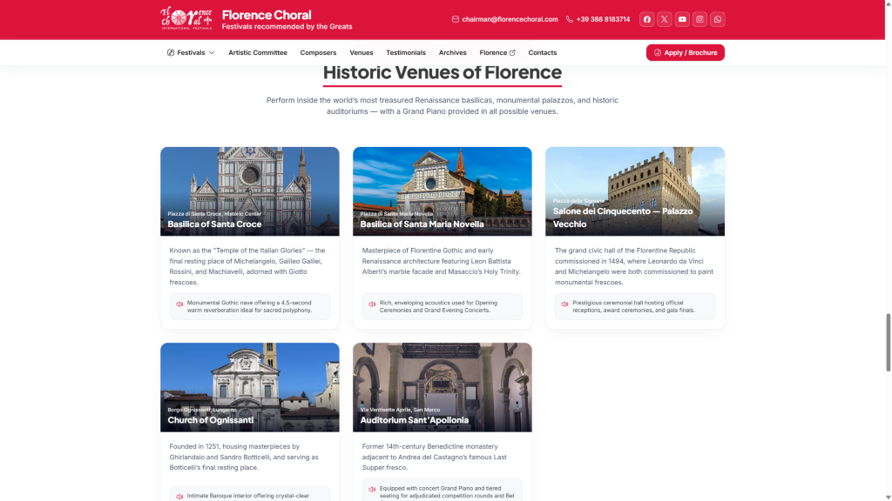
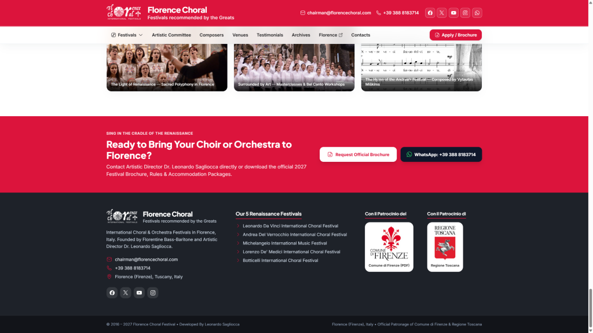

Website Rebuild & Maintenance (florencechoral.org)•Unlimited Graphic Design•Unlimited Video Editing
PREPARED BY:

Jezreel Dave Leybag
Web Development, Graphic Design & Video Production
PREPARED FOR:
FLORENCE CHORAL
Dr. Leonardo Sagliocca
Founder & Artistic Director • Florence, Italy
INTRODUCTION
01 / STORYLINE
Following the loss of access to the legacy WordPress installation on florencechoral.com, international choir directors currently hit broken pages (403 Forbidden). Ahead of our transition to florencechoral.org, I have built a complete, working platform prototype.
At Jezreel Dave Digital & Media, my goal is simple: give Florence Choral a fast, prestigious, 100% functional website while handling all your year-round graphic design and video editing under one predictable monthly partnership.
Previous Site Challenges (florencechoral.com)
Broken Inner Pages: Clicking Festivals, Venues, or Artistic Committee returns a 403 Forbidden error.
Locked Admin & Code: No direct access to source files, backups, or easy schedule updates.
High Decision Friction: Visiting conductors cannot easily compare all 5 annual festivals or apply in one click.
New Platform Solution (florencechoral.org)
100% Working Pages: All 5 Renaissance festivals, 4-day programmes, venues, and jury rosters load instantly.
100% Client Ownership: You hold direct Owner keys to the source code, domain, and visual dashboard.
Built for Choir Conversion: 1-click PDF brochure downloads, WhatsApp chat, and online application modals.
Once launched on florencechoral.org, our partnership empowers you to:
Keep all 5 annual festivals, dates, and jury rosters updated on-demand
Produce unlimited print brochures, concert posters, and choir diplomas
Publish unlimited festival trailers, concert recordings, and social media reels
Below is a visual walkthrough of the prototype we built and why each upgrade improves usability.
PROTOTYPE WALKTHROUGH
16:9 DESKTOP (1/2)
Captured in 16:9 widescreen desktop resolution. Every section is engineered using proven UX/UI Design Laws so international conductors can find festival details and register effortlessly:
01. Optical Brand Header & Frosted-Glass "Festivals" Menu
Embedded your transparent Florence Choral emblem directly into the crimson header, paired with a 90%-frosted Apple-glass dropdown showing all 5 festivals and dates.
Golden Ratio (1:1.618) & Hick’s Law
Optical alignment locks the Duomo crest to the title cap-height, while Hick’s Law cuts decision time by listing all 5 festival dates in one clean menu.

02. The 5 Renaissance Master Festivals Directory
Structured 3-column directory for Leonardo da Vinci, Verrocchio, Michelangelo, Lorenzo de’ Medici, and Botticelli with status badges and deadlines.
Law of Proximity & Visual Hierarchy
Groups festival dates, Renaissance master dedications, and deadlines inside uniform cards so choir directors can compare all 5 seasons in seconds.

03. Interactive 4-Day Programme & Rules Modal
Instant overlay window displaying the Day 1–4 itinerary, competition categories, repertoire rules, prizes, and 1-click registration actions.
Fitts’s Law & Progressive Disclosure
Delivers complete festival rules on demand without page reloads, keeping large "Request PDF Brochure" and "Apply" buttons within immediate reach.

PROTOTYPE WALKTHROUGH
16:9 DESKTOP (2/2)
04. "Our Difference" Pillars & Custom SVGs
Showcases Special Features, Bel Canto Workshops, and International Juries using custom geometric SVG icons and 3-point checklists.
Law of Prägnanz (Simplicity & Clarity)
Replaces dense paragraphs with scannable 3-point checklists that non-native English conductors can read in under 5 seconds.

05. Global Impact Counter & Jury Roster
Animated Renaissance-Azure counter bar (Events, Choirs, Nations, Participants) with custom choral vectors preceding the Artistic Committee.
Authority & Social Proof Principle
Quantifies Florence Choral’s global track record at a glance right before introducing Dr. Sagliocca and the international jury panel.

06. Historic Venues of Florence Showcase
Verified photography of Basilica of Santa Croce, Santa Maria Novella, Salone dei Cinquecento (Palazzo Vecchio), Ognissanti, and Sant’Apollonia.
Aesthetic-Usability Effect
Authentic architectural imagery creates an immediate emotional desire for visiting choirs to perform inside Florence’s greatest basilicas.

07. Official Patronage & Conversion Footer
Displays the Comune di Firenze (linked to the official PDF decree) and Regione Toscana crests alongside 1-click WhatsApp and Brochure actions.
Serial Position Effect (Recency & Trust)
Anchors the end of the page with official government patronage proof and immediate inquiry channels.

SITE STRUCTURE
Your new florencechoral.org platform includes all core navigation sections, interactive festival modals, and historical archives:
Home & Hero
5 Festivals
Artistic Committee
Historic Venues
Composers & Hymn
Testimonials
Photo/Video Archives
Florence & Contacts
SITE INTEGRATIONS
Jezreel Dave integrates your website with direct choir conversion tools and full owner-controlled cloud infrastructure:
1-Click Brochure & Apply
WhatsApp & Email Routing
100% Code & Admin Keys
These integrations turn florencechoral.org into an active choir recruitment engine while guaranteeing you can never be locked out of your website again.
UNLIMITED MEDIA STUDIO
Beyond the website, your monthly partnership includes unlimited graphic design and video editing for all 5 annual festivals:
3. Official 2026/2027 PDF Brochures & Application Form Routing
Week 1 of Partnership
4. Continuous Web Maintenance, Unlimited Graphic Design & Video Editing
Ongoing Year-Round (All 5 Festivals)
MONTHLY SERVICE & OFFER
ALL-INCLUSIVE
Instead of hiring and coordinating a separate web developer, graphic designer, and video editor, this all-in-one monthly partnership covers every digital, print, and video need for Florence Choral.
Service Pillar
What My Service Will Do for Florence Choral
Access / Limit
1. Website Development & Maintenance (florencechoral.org)
• Full launch, hosting setup, domain transition (florencechoral.org), and security monitoring.
• Continuous updates to festival dates, 4-day programmes, jury members, venues, and archives.
• Ongoing development of new features, multilingual pages, and choir registration tools.
Continuous & On-Demand
2. Unlimited Graphic Design (Print & Digital Media)
• Official Festival Brochures, Rulebooks, and Registration Packages (PDF & print-ready CMYK).
• Concert posters, basilica stage banners, printed concert programmes, and score sheets.
• Official Gold / Silver / Bronze Choir Diplomas, certificates, and social media graphics.
Unlimited Requests
3. Unlimited Video Editing (Promotional & Archival)
• Promotional trailers and invitations for all 5 annual Florence Choral festivals.
• Editing of concert recordings, choir performance highlights, and Vytautas Miškinis hymn features.
• Short-form vertical videos (Instagram Reels, YouTube Shorts, Facebook) & jury interviews.
Unlimited Requests
4. Full Source Code & Admin Ownership (Zero Lockout Guarantee)
• Direct Owner access to the GitHub source code repository, domain registrar, and visual dashboard.
• Automated backups of all choir applications, brochure requests, and media archives.
100% Client Owned
FINAL ALL-INCLUSIVE MONTHLY OFFER
Website Development & Maintenance + Unlimited Graphic Design + Unlimited Video Editing
€800 EUR / Month
Authorization & Scope
Florence Choral (Dr. Leonardo Sagliocca) engages Jezreel Dave Leybag as an independent contractor for ongoing website development/maintenance (florencechoral.org) and unlimited graphic design & video editing.
Payment & Flat Rate
Fixed monthly retainer of €800 EUR / month with zero hidden hourly or per-revision charges. Billed monthly via international bank transfer / Wise.
Copyright & Ownership
Dr. Leonardo Sagliocca / Florence Choral owns 100% of all source code, domains, print layouts, and edited videos from day one, with full owner credentials at all times.
Flexible Term
Simple month-to-month partnership with 30 days’ written notice to pause or cancel; full standalone Service Agreement is provided in the accompanying contract document.
Jezreel Dave Leybag • Web Development, Graphic Design & Video Production
Dr. Leonardo Sagliocca • Founder & Artistic Director, Florence Choral
 FLORENCE CHORAL
FLORENCE CHORAL